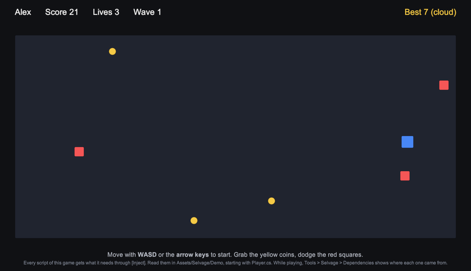

Explore the demo
Play a small game whose scripts receive everything through [Inject].
Run the demo
The demo requires the Unity UI package (com.unity.ugui). To run it, perform the following steps:
- Open
Assets/Selvage/Demo/Selvage Demo.unity. - Enter Play mode.
- Move with WASD or the arrow keys, collect the coins, and avoid the enemies. After a game over, press Space or Enter to play again.

While the demo plays, the Live tab of the Dependencies window displays what each member holds. For more information, refer to Inspect injected members.
Note: The demo requires the Registry Provider, the Attribute Provider, the Asset
Provider, and a Scene Provider that looks through the whole scene (its Reach is
Scene or All Scenes). If one is missing or turned off, the demo doesn't start, and
displays which provider to add. To restore them, go to Edit > Project Settings
> Selvage, open the More (⋮) menu at the top right of the page, and select
Default. For more information, refer to
Reuse your setup in other projects.
Demo scripts
In the demo's scripts, a comment above each member explains where its dependency comes from. Start with
Game/Player.cs. The following table lists where the demo uses each feature:
| Feature | Used in |
|---|---|
| Scene components | Player, Coin, WaveSpawner, GameOverPanel, Hud |
[Provide] | Score |
| Provide Definition | GameSettings, in Provided Assets |
| Registry | SaveSystem, which adds the player's profile and the save on this device |
| Custom provider | CloudSave, which gives a save from a simulated cloud after a second |
Optional | Player, Coin |
Manual | Enemy |
EditMode | Arena |
Overwrite, Async, Reactive, Warm, Weak | Hud |
The demo provides only its own types, so it doesn't change what the rest of your project receives. To remove it,
delete the Assets/Selvage/Demo folder.